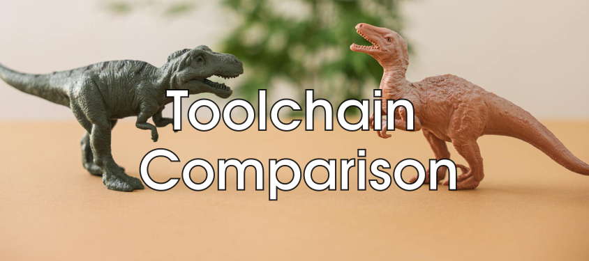
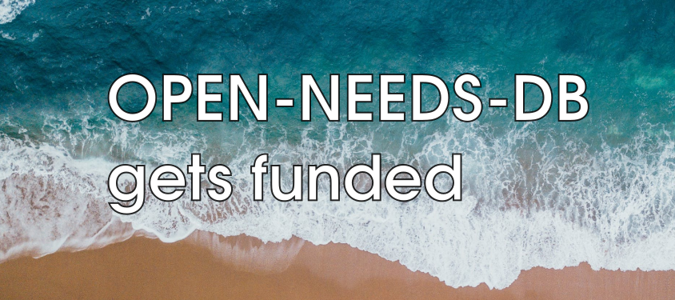
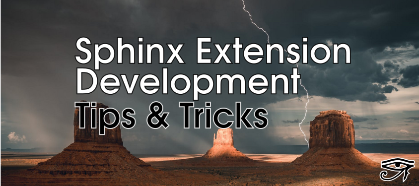
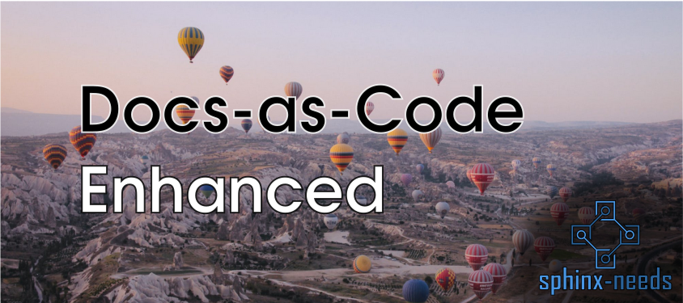
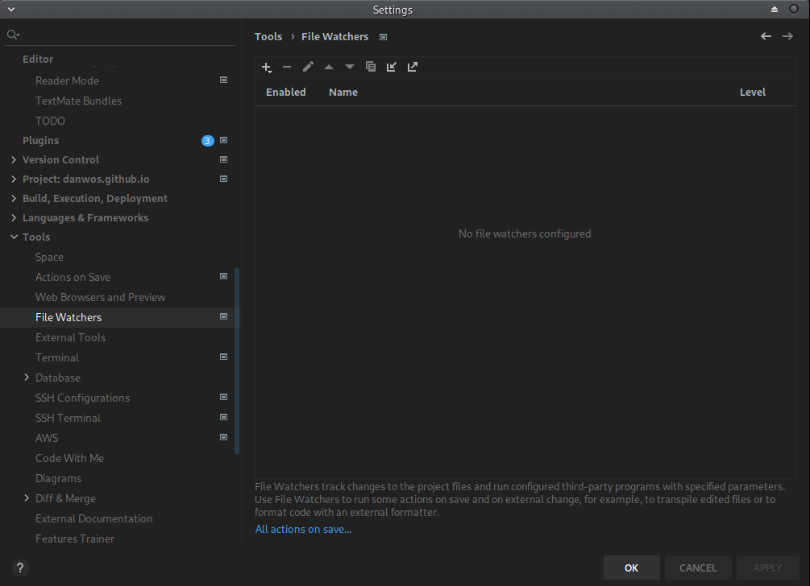
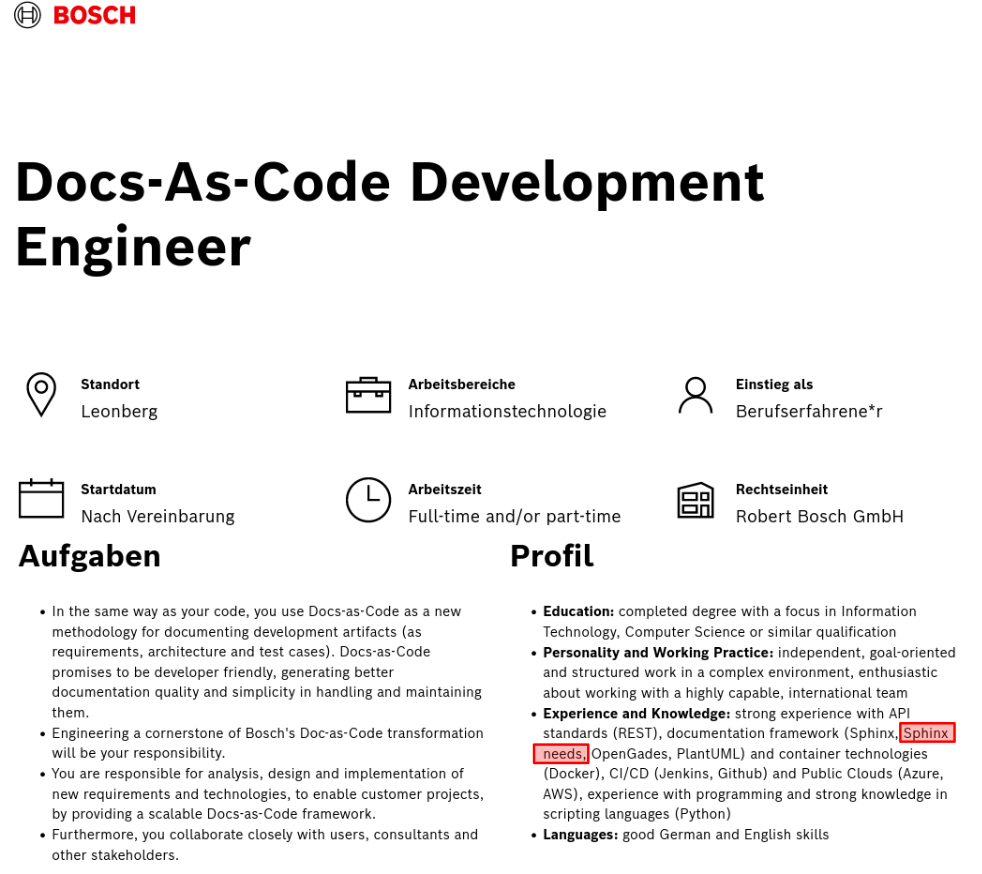

Big business and Docs-as-code#
Welcome dear friend 👋,
I’m Daniel, and I’m a passionate Software developer for topics round about
📊 Business Insights
📚 Smart Documentation and
🔨 Continuous Integration and 📦 Delivery
This is my private blog, used to write down my thoughts and ideas about documentation challenges in bigger teams.
I have developed a bunch of solutions, that make it possible to use the docs-as-code approach not only for end-user documentation but already during project setup and realization, including Application Lifecycle Management and the integration of external data from architecture and test frameworks. Just take a look at my projects for a quick overview.
My daily work is at useblocks, a small, specialized, German company creating tools for the international Automotive industry. Focussing mostly on PMT (processes, methods, tools) for distributed software teams (>100-2.000 team members).
Blog entries#
Toolchain comparison (2025-07-15)
At some point, every project faces the challenge of selecting a tool or, as systems become more complex, an entire toolchain. Choosing a toolchain also means deciding against one or more alternatives. Unfortunately, these decisions are often based on subjective criteria rather than objective facts: personal experience, missing features, anecdotal success stories from other teams, or simply a lack of access to comprehensive information and user requirements.
This article presents a toolchain comparison spreadsheet, free of charge and open for modification and internal use. It is prefilled with tools from the docs-as-code ecosystem and, most importantly, includes over 160 user requirements collected from automotive software projects (150–1,500 users) over recent years.
Documentation as Code in Automotive System/Software Engineering (2024-01-23)
Some days ago I stumbled over a PDF paper by Dr. Momcilo Krunic from 2023, in which he describes a docs-as-code implementation for an ASPICE-compliant SW development project at an Automotive supplier. And what can I say? This article by Dr. Momcilo Krunic is the best overview I have ever read, regarding the introduction of docs-as-code in a professional Automotive SW project. Therefore I decided to get in contact with him and ask for permission to republish his outstanding work in an HTML version so that single chapters are easier to link and share. It’s 100% in sync with the original post, I only needed to change 1-2 reference styles for technical reasons. And I added also some personal notes as dropdowns, pointing to extensions or slightly different implementation ideas.
This post was written and published by Dr. Momcilo Krunic, as a paper for the Elektronika ir Elektrotechnika journal. The original version can be downloaded as PDF from ResearchGate. Original sources are available on a gitlab repository under Creative Common License 4.0. It’s also worth to visit his new startup: labsoft.ai.

Manager POV: What’s the benefit of docs-as-code? (2024-01-02)
In the last 2-3 years one of my main tasks was to convince people to use a docs-as-code approach for their SW project. The hard part is not to convince SW developers to use it, as they are often already doing it. But team leaders and managers, as their concerns are often not related to single features, but more about process and toolchain compliance and integration. And for sure the question of all questions: What’s the monetary benefit?
So if you are a CEO, a manager, a team leader or just want to understand the big picture, grab a coffee/tea, sit back and let me explain: How docs-as-code will save you money and still increase the product quality.
Process documents with Sphinx-Needs (2021-12-02)
Documenting processes is often a separate task in companies. Done by an extra department/team for processes, workflows and tools (PMT). And published in specific formats, which are not reusable or referencable by project specific documentations. But being able to link project requirements to process steps would help developers to understand the need for such requirements.
This post explains how the docs-as-code approach can be used to document processes and workflows.

Open-Needs-DB gets funded (2021-11-29)
The Prototype Fund supports and finances Open-Needs-DB from March to September 2022.
The Federal Ministry of Education and Research created this program to support developers in Germany during the creation of digital prototypes for topics in the area of Civic Tech, Data Literacy, IT Security and Software Infrastructure.
Sphinx Extension Development: Tips & Tricks (2021-11-22)
In the last year I have written some Sphinx extensions and figured out some stuff, which I want to share here.
First of all, the documentation for Sphinx extension development is not so detailed. There is a tutorial available by the Sphinx team, but the used example project is quite simple.
Docs-as-Code Enhanced (2021-11-19)
For most of us “Docs-as-Code” mostly means to store the documentation files beside the project sources in git. Also editing the sources in an already used IDE and using the CI system to build it, are 2 important use cases why docs-as-code is chosen to create documentation.
But these features have nothing to do with the documentation content itself. What if the content itself can be treated as code? What if the content / documentation language provides features, which we already know from our programming languages?
Page meta data in Sphinx (2021-11-18)
In bigger Sphinx projects, written by hundreds of authors, you often need to store additional data to somehow have the overall page creation and update process under control.
This data can be stored and maintained as meta-data on top of each rst file.

String2Link transformation with Sphinx-Needs (2021-11-16)
Sphinx-Needs got a new cool feature to easily create links of a given string for options. The string-links feature.
This allows to just set e.g. a github issue id and get a link to exactly this issue in the final docs.
PyCharm File Watchers for Sphinx projects (2021-11-05)
I often have the case that I want to see my documentation as fast as possible.
And I know there are “Preview” IDE-Extensions available, which want to solve this problem.
Page reactivation (2021-11-02)
For a long, long time I had no private representation on the internet, as most of my work was done for open-source projects, so that I added my thoughts to their websites and documentation pages.
Now, I’m planing something big ;)
Job advertisement for Sphinx-Needs (2021-11-02)
I just have detected the first job advertisement, which asks for Sphinx-Needsas skill. Yeah 🥳
The job is for a Docs-As-Code Development engineer at Bosch in Leonberg, Germany.

{kind=link}
{kind=link}
Page meta data objects#
Start page of this website |